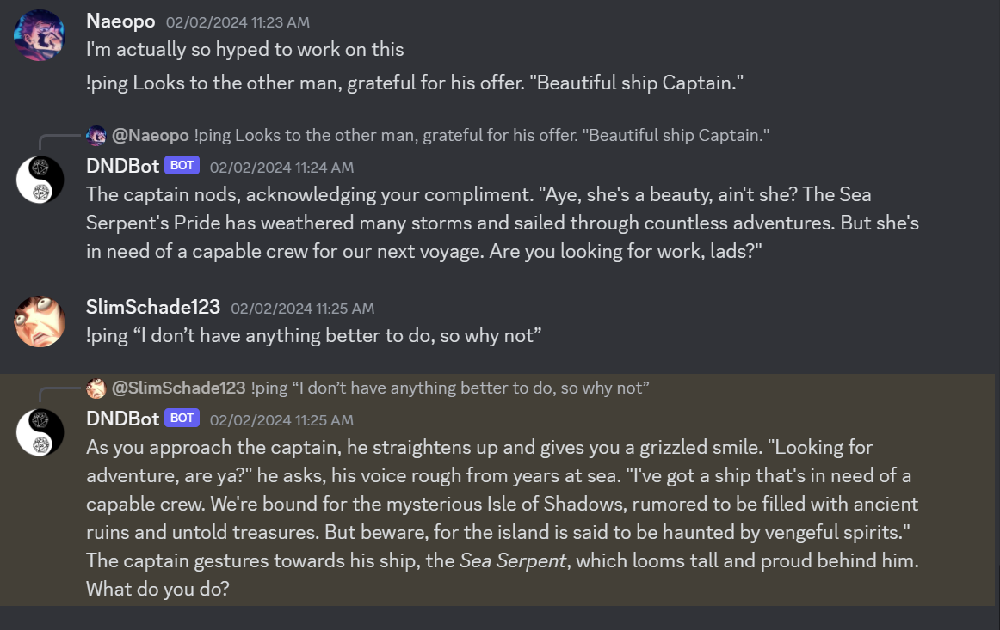
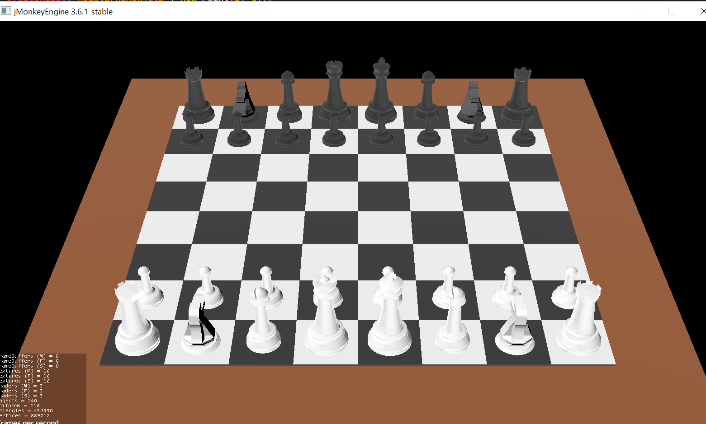
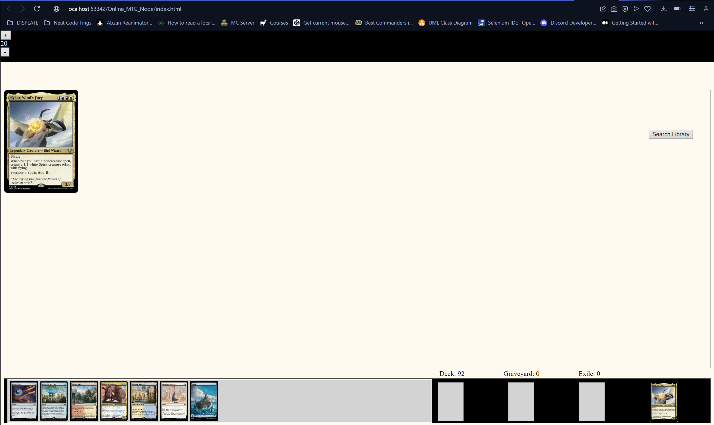

Christopher Schade's Projects
D&D Discord Bot
This is my discord bot created to recreate a Dungeon Master for a Dungeons & Dragons Campaign.
It uses the chatgpt3.5-turbo model to generate prompts for the user and keeps track of the story and can hold different stories on different discord channels.
This is a Project my friend and I started, but are still in the process of making!
Github

3D Chess
This is my final project for CSC150: Object-Oriented Programming & Design.
It's Chess rendered using JMonkeyEngine and utilizing Object Programming.
Features:
- A Working Chess Game
- A Save/Load Feature using Chess Algebraic Notation
- (WIP) A Simple Chess Bot for Single Player Experience
Github

Node MTG
This is my web-based version of Magic The Gathering! I am utilizing node.js to have server functionality.
I am currently working on hooking it up to an express server in order to have multiplayer capibility.
This has been a side project of mine for a couple years that I have scratched and refined over time.
Features:
- Playing Magic The Gathering
- Playing different formats
- (WIP) Multiplayer Functionality
Github
